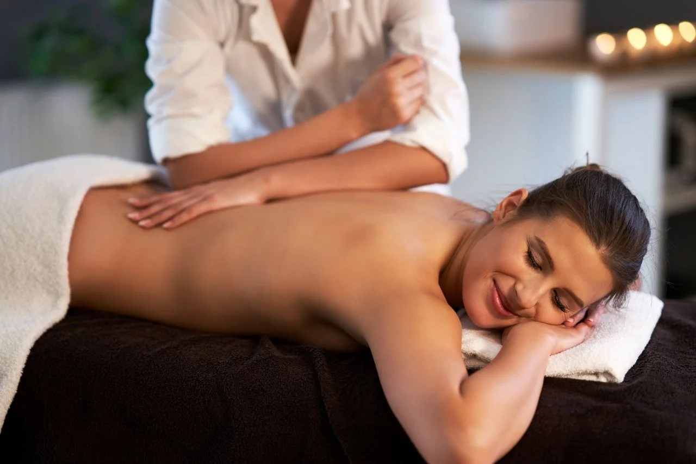
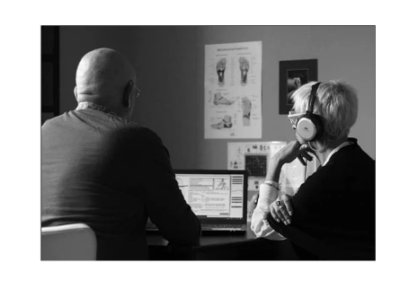
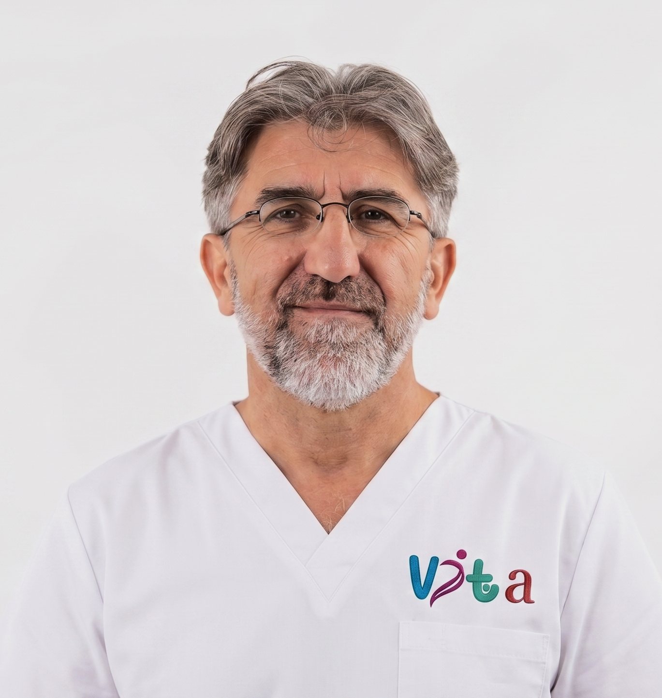

S’arrêter,
respirer,
se reconnecter
DIDIER MARTIN, PRATICIEN EN SOINS ÉNERGÉTIQUES, VOUS ACCUEILLE AVEC UNE APPROCHE HOLISTIQUE POUR VOUS AIDER À LIBÉRER ET RELANCER VOS ÉNERGIES VITALES. IL UTILISE TROIS TECHNIQUES DE SOINS COMPLÉMENTAIRES POUR REPARTIR SUR DES BASES SAINES, LAISSANT AINSI AU CORPS LA POSSIBILITÉ DE DÉMARRER SES MÉCANISMES D’HOMÉOSTASIE ET D’ÉQUILIBRAGE.
Techniques
de soin
POUR AIDER À RELANCER SON MÉCANISME D'AUTO-GUÉRISON ET RETROUVER SON ÉQUILIBRE, LES SOINS PROPOSÉS PERMETTENT DE NETTOYER LES ÉNERGIES STAGNANTES OU USÉES, RECHARGER, RELANCER LA CIRCULATION DE CES ÉNERGIES VITALES CE QUI AIDE LE CORPS DANS SON MÉCANISME D'HOMÉOSTASIE.
Réflexologie
plantaire
PRATIQUE ANCESTRALE, CETTE TECHNIQUE DE SOIN ALTERNATIVE SE PRATIQUE PAR DIGIPRESSION SUR LES ZONES RÉFLEXES DU PIED AFIN DE DÉTECTER ET DE LIBÉRER LES TENSIONS.

Massage
Abhyanga
MASSAGE DE BIEN-ÊTRE CORPS ET ESPRIT. SES VERTUS ME PERMETTENT DE NOURRIR, TONIFIER ET RÉ-ÉQUILIBRER L’ENSEMBLE DU CORPS DANS TOUT LE CORPS TANT AU PLAN PHYSIQUE QUE MENTAL.
Massage
Ayurvédique
PERMET D’OBTENIR DES INFORMATIONS PRÉCIEUSES SUR L’ÉTAT ÉNERGÉTIQUE ET LE TROUBLE ÉVENTUEL DU CORPS PHYSIQUE, ÉMOTIONNEL, MENTAL, ÉNERGÉTIQUE ET SPIRITUEL.
Service
Additionnel
DESCRIPTION DU SOIN COMPLÉMENTAIRE PROPOSÉ POUR UNE EXPÉRIENCE DE BIEN-ÊTRE TOTALE ET PERSONNALISÉE SELON VOS BESOINS SPÉCIFIQUES.
Autre
Technique
UNE APPROCHE INNOVANTE POUR COMPLÉTER VOTRE PARCOURS DE SANTÉ HOLISTIQUE ET RENFORCER VOTRE VITALITÉ NATURELLE.
LES PROCESSUS D'AUTO-GUERISON SE REALISENT TOUS SEULS, MAIS PAS SANS NOTRE TOTAL CONSENTEMENT.
Je suis devenu un adepte passionne du bien etre. Ma philosophie est desormais "une pause pour soi", pour s'arreter, respirer, se reconnecter a soi, son essentiel.
DIDIER MARTIN

PHYSICIEN DE FORMATION ET DE METIER, DIDIER MARTIN A COMPRIS QUE TOUT EST ENERGIE, QU'ELLE SE TROUVE DANS LE PRESENT, D'OU L'IMPORTANCE DE CETTE PAUSE. CE SONT LES SOINS ENERGETIQUES QUI L'ONT AIDE A RETROUVER SON EQUILIBRE DE SANTE CORPORELLE, PSYCHOLOGIQUE ET EMOTIONNELLE. CETTE NOUVELLE PRISE DE CONSCIENCE L'A DIRIGE VERS LEURS APPRENTISSAGES DURANT PLUSIEURS ANNEES. AUJOURD'HUI, IL VOUS ACCUEILLE AVEC TOUTE SON ATTENTION ET DANS LA BIENVEILLANCE.